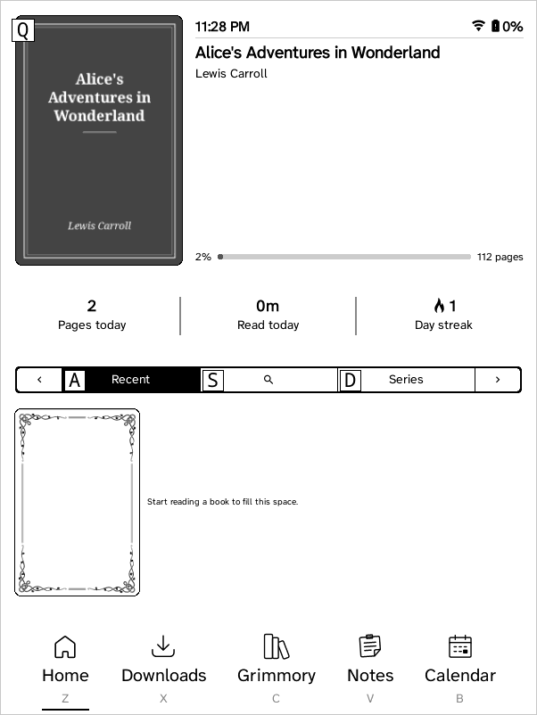
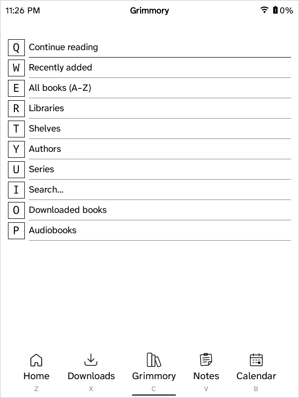
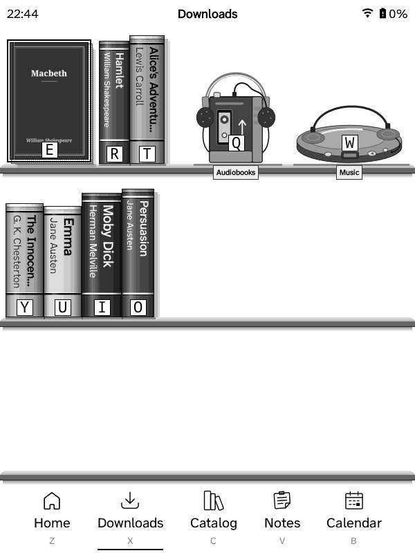
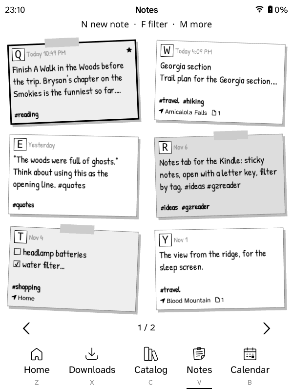

GZreader
Your Grimmory library on a Kindle. Download books, read them or have them read aloud, and keep your place, bookmarks and highlights in sync.




What it is
GZreader is KOReader trimmed down to reading, with the ZenOS interface and a built-in connection to your self-hosted Grimmory (formerly BookLore) book server. It runs on jailbroken Kindles, from the Kindle 2 and Kindle Keyboard to the Paperwhite and newer.
Grimmory sync
Browse and search your library, download in the background, and keep reading position, bookmarks, highlights and ratings in sync.
Set up from your browser
Scan a QR code or type the Kindle's address and a PIN. One page connects everything, single sign-on included, and sends books to the Kindle.
Notes and calendars
Your Memos notes as sticky notes, and CalDAV calendars or calendar links (Proton, Google…) as an agenda, week or month.
Audiobooks and music
Grimmory audiobooks with your place kept, and albums from Plex, on Kindles with a speaker or headphone jack.
Read aloud
On the Kindle 2, 3, DX and Touch: books read in the Kindle's own voice, the sentence highlighted and pages turning by themselves.
No Wi‑Fi? Sync over USB
The Kindle 2 and DX sync through a page on your computer: reading progress to Grimmory, and books, audiobooks, music, notes and calendars back.
Made for e-ink
Wi‑Fi only when needed, few screen flashes on older Kindles, a built-in English dictionary and updates from GitHub.
Which package
| Kindle | Package |
|---|---|
| Kindle 2, Kindle Keyboard (3), DX | gzreader-kindle-legacy |
| Kindle 4, Kindle Touch | gzreader-kindle |
| Firmware 5.16.3 or newer: Paperwhite 3 and later, Kindle 2019–2024, Oasis, Scribe, Colorsoft | gzreader-kindlehf |
| Paperwhite 2 and newer on firmware 5.16.2 or older | gzreader-kindlepw2 |
Install
- Jailbreak the Kindle and install KUAL (kindlemodding.org; Kindle 2, 3, DX, 4 and Touch: MobileRead).
- Download your package from the latest release.
- Unzip it and copy its folders to the top of the Kindle's USB drive. Eject.
- Start GZreader from KUAL, or from the GZreader item on a touch Kindle's home screen. The setup guide shows a QR code.